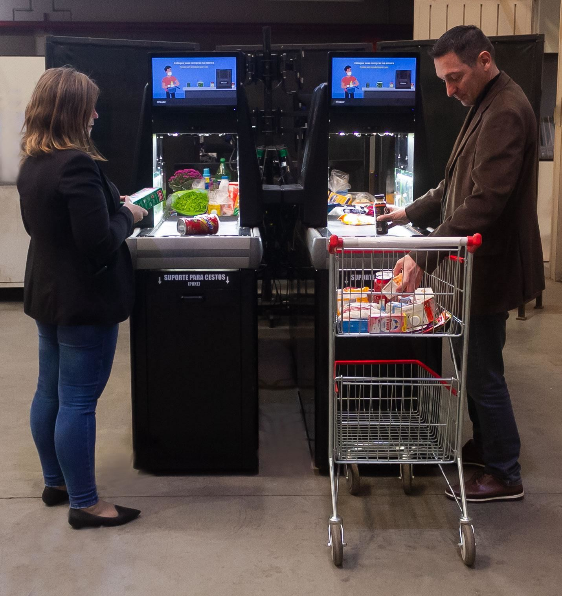

Sobre o Produto
Manual do Usuário
Este Manual tem como objetivo auxiliar os usuários do XReader aos apresentar: o funcionamento, manutenção preventiva e resolução de possíveis erros.
O que é o XReader?
XReader é um self-checkout diferente, que permite vendas de compras pequenas até compras em maior quantidade, realiza a checagem dos produtos por leitura de código de barras e a imagem do produto, independentemente da posição que o produto é colocado na esteira. Ele proporciona a redução dos movimentos repetitivos dos operadores de caixa, reduzindo seu esforço físico ao longo do dia. Sua esteira é mais veloz, permitindo assim uma maior produtividade e agilidade no processo de compra, melhorando assim a experiência dos clientes.
Design Geral

Como é o Produto?
Todo produto XReader contém os seguintes itens:
- Tela do usuário (Cliente).
- Esteira para passagem dos produtos por parte do cliente.
- Portal de leitura de código de barras e identificação do produto.
- Área para embalagem dos produtos.
- Monitor vertical com informações de cada produto lido.
- Tela do operador de caixa para exibir o Sistema PDV.
Área do Cliente
Área destinada ao cliente para colocação de produtos e inserção de informações para pagamento (ver seção Consumidor):
Área do Operador
Área destinada ao operador de caixa. Nela é possível controlar o equipamento e acessar as informações de cada produto lido pelo XReader (ver seção Operador), bem como o sistema PDV padrão do estabelecimento: